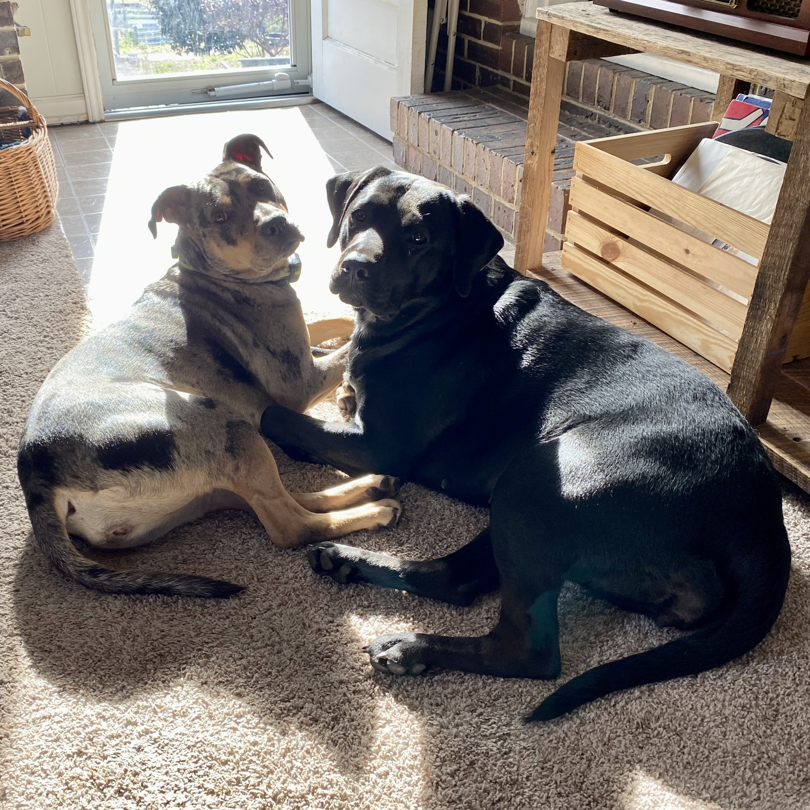

I'm Willow.
Aspiring Web Developer

I am a dog mom of two beautiful and glutinous creatures named Raven (Labrador Retriever) and Starfire (Catahoula Leopard / American Staffordshire Terrier).
Outside of spoiling these two, I enjoy art of many forms, finding ways to express myself and helping others in any way that I can.
My love for technology came from watching my brothers play video games for hours on end. Then one day when I realized my controller was not plugged in, I asked the question that now haunts my curiosity.
How does this work?
Inside me sparked this joy of taking things apart. That then led me to enjoy putting them back together or making something different entirely.
For years my role was free IT for the family and I even got to build computers for my high school, friends, and my personal computer. I did my best to uncover their needs and try to create a PC that exists for them rather something you could go find on a shelf.
So many people use a multitude of devices every day, so I believe it's important to understand how they work and to make them more understandable for others.
As I said above, I really love art in many forms. I try to take into consideration how things will be perceived in different views and emotional states others are in. It's all in the detail and what really sets whatever it is I'm doing apart. Art is what gives us individuality.
A great example of my creativity is my journey with music. I am fully self taught with the instruments I play, singing duets with myself, and even the program I use to record, engineer, produce, and / or master in my creative outlet.
I hope you have a wonderful rest of your day / night and find many smiles along the way. Take care ❤